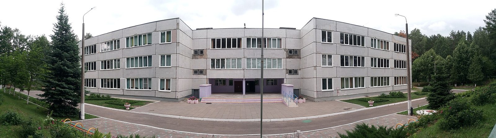
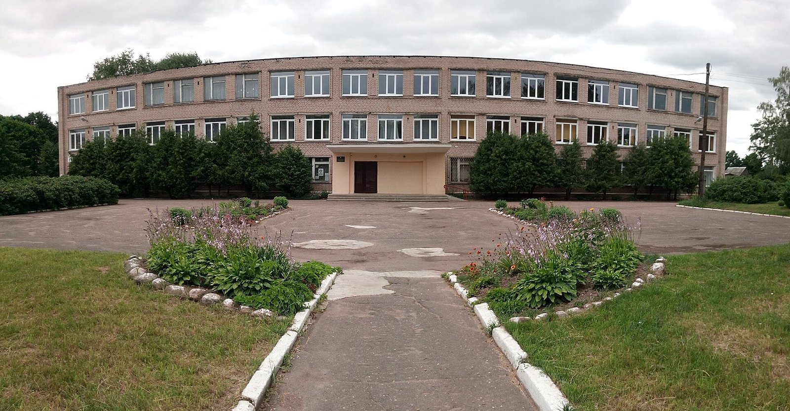
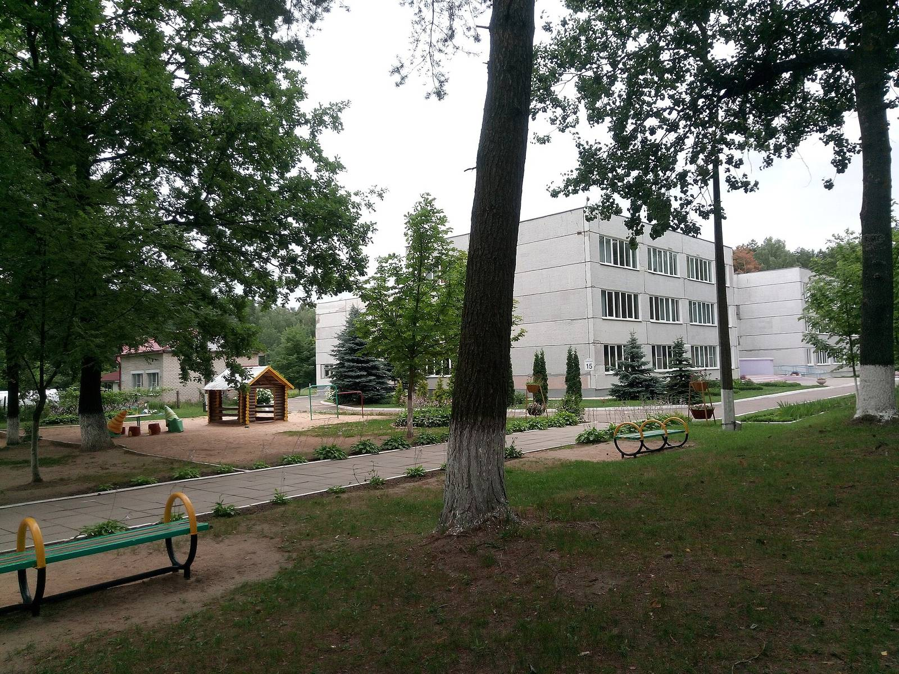
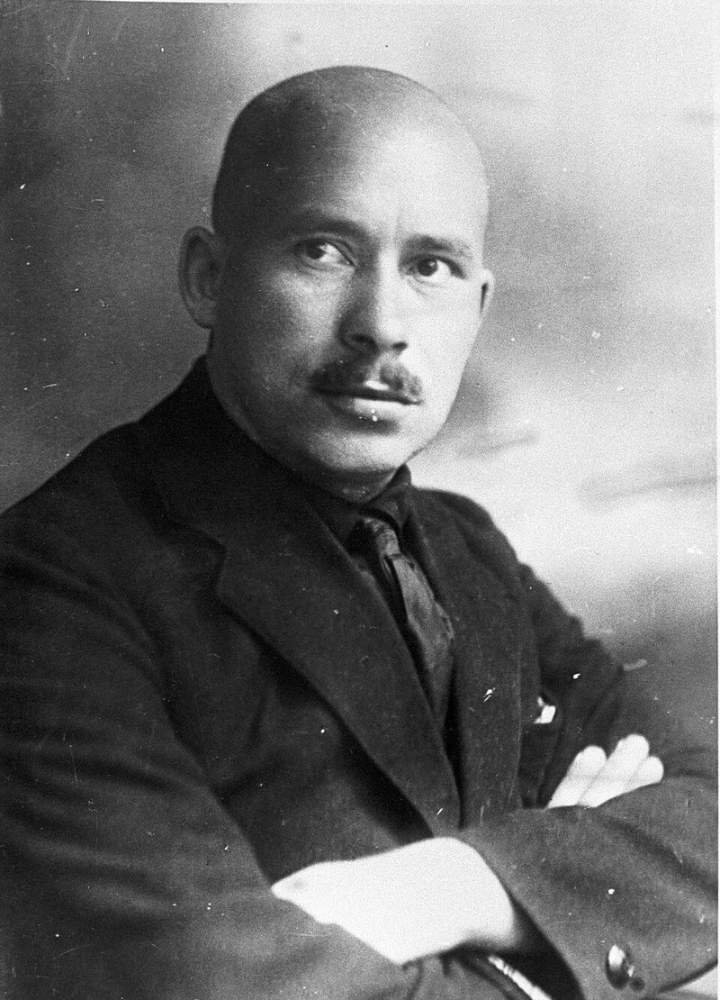

Погружение в профессию: инженерный класс в БНТУ
Учащиеся инженерного класса побывали на факультете горного дела и инженерной экологии Белорусского национального технического университета.
Читать на официальном сайтеШкола Пуховичского района, где учат думать, исследовать и создавать: инженерный класс, ресурсные центры по робототехнике и математике, школьный музей и лесничество.
Школа начиналась в 1935 году как филиал Дукорской школы — трёхклассная начальная школа на 18 учеников. Сегодня это современное учреждение образования в здании на 686 мест с профильными классами и ресурсными центрами района.
20 апреля 1973 года школе присвоено имя Александра Григорьевича Червякова — уроженца соседней Дукоры, учителя и государственного деятеля, первого наркома просвещения Беларуси.
История и руководство
По данным официального сайта школы; численность учащихся — за 2024/2025 учебный год.
Последние события школьной жизни.

Учащиеся инженерного класса побывали на факультете горного дела и инженерной экологии Белорусского национального технического университета.
Читать на официальном сайтеНа торжественной линейке наградили победителей I этапа республиканской олимпиады: 68 дипломов на 120 участников — 23 первой, 23 второй и 22 третьей степени.
Читать на официальном сайте
На осенних каникулах в школе работал воспитательно-оздоровительный лагерь «Лесовичок».
Читать на официальном сайтеПрофильный класс инженерной направленности: выезды в БНТУ, участие в форумах и «Дне юного энергетика».
Районный ресурсный центр «Образовательная робототехника» и фестиваль «Робомир».
Ресурсный центр по математике, призовые места на областных турнирах юных математиков.
Работает с 2002 года: ребята изучают природу родного края и помогают её беречь.

Родился в 1892 году в деревне Дукорка — в нескольких километрах от нынешней школы. Окончил Виленский учительский институт, работал учителем, стал первым наркомом просвещения Беларуси, а в 1920–1937 годах возглавлял ЦИК БССР. 30 декабря 1922 года от имени БССР подписал Договор об образовании СССР.
В школьном музее ему посвящена экспозиция «Его имя носит наша школа».
Биография222823, Минская область, Пуховичский район, г. п. Свислочь, ул. Строителей, 15
Телефон: +375 1713 29198
E-mail: svisloch.sch@pukhovichi-asveta.gov.by